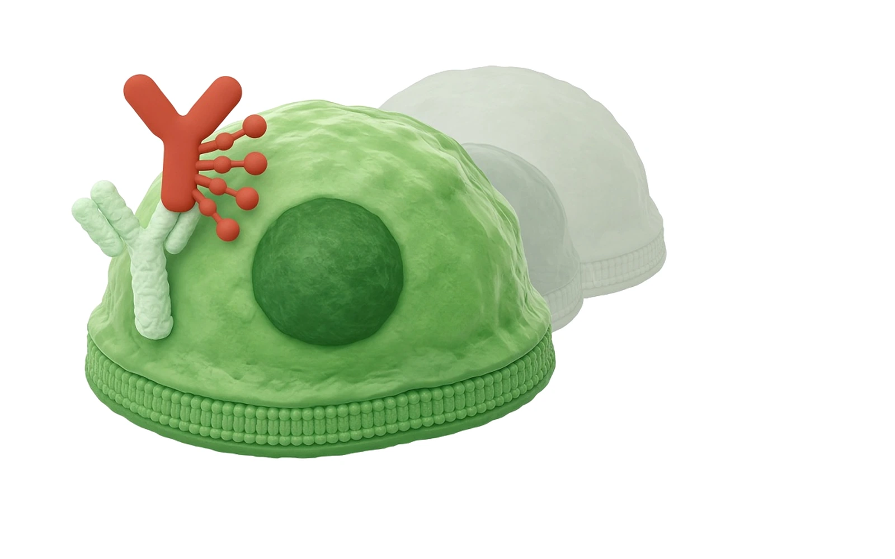
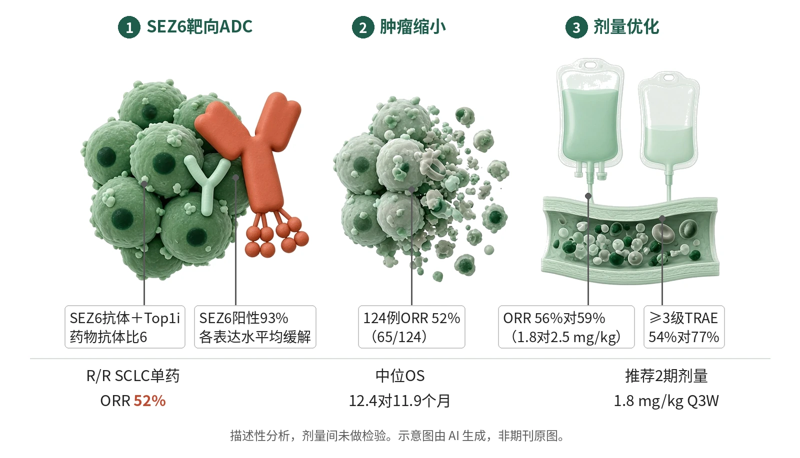

封面示意：赤陶红抗体偶联药物结合绿色肺癌细胞表面。图片由 AI 生成，非原文图片。
在124例复发/难治小细胞肺癌单药治疗中，ABBV-706每3周给药的确认ORR为52%（65/124），随机剂量优化后选定1.8 mg/kg为推荐2期剂量。

- SEZ6抗体携带Top1i载荷
- 每3周静脉给药
- 肿瘤缩小，ORR 52%
- 随机比较后选1.8 mg/kg
示意图概括本试验：SEZ6靶向ADC携带拓扑异构酶1抑制剂结合SCLC细胞，124例单药患者确认ORR 52%；两剂量缓解率相近，较低剂量毒性更少，被选为推荐2期剂量。示意图由 AI 生成，依据原文结果绘制，非期刊原图，不代表分子比例
研究背景与待解问题
小细胞肺癌（SCLC）约占肺癌的11%，多数患者一线治疗起初有效，但近50%在6个月内进展，广泛期5年总生存率仅约12%。复发后可用拓扑替康、氨柔比星、卢比替定等标准化疗，作者指出，铂耐药或难治患者接受这些化疗的历史缓解率低于20%。
SEZ6是一种神经谱系I型跨膜蛋白，在SCLC和高级别神经内分泌癌中高选择性表达。ABBV-706把SEZ6单抗经稳定连接子偶联拓扑异构酶1抑制剂（Top1i），药物抗体比为6，内化后在溶酶体释放载荷。Byers等在Nature Medicine报告其首次人体1期结果。
研究设计
这是一项首次人体、开放标签1期试验，ABBV-706每3周静脉给药（Q3W）。第1部分在晚期实体瘤中按贝叶斯最优区间设计从1.3递增至3.5 mg/kg；第2a部分把铂类化疗免疫治疗后进展的SCLC患者平均随机至1.8或2.5 mg/kg，不设分层；第4部分为高级别神经内分泌肿瘤扩展。截至2025年9月27日共入组288例。
其中240例接受单药，124例为复发/难治（R/R）SCLC，80例进入第2a部分（1.8 mg/kg组41例、2.5 mg/kg组39例）。主要疗效指标为研究者评估的确认ORR，即RECIST v1.1完全或部分缓解，并在至少4周后复核确认。全部分析为描述性，未计划正式假设检验，也未做样本量或把握度计算。
核心结果
整体缓解率52%
在124例R/R SCLC单药患者中，研究者评估ORR为52%（65/124），中位缓解持续时间5.3个月（95% CI 4.1–6.7）。中位随访16.9个月时，中位PFS为5.4个月，中位OS为11.3个月（95% CI 9.1–14.8），15个月总生存率估计为40%。
两剂量缓解相近
第2a部分随机剂量优化中，1.8与2.5 mg/kg组ORR分别为56%（23/41）和59%（23/39），中位缓解持续时间5.9个月（95% CI 3.6–11.1）对4.9个月（3.5–6.9）。中位PFS 6.4对5.6个月，中位OS 12.4对11.9个月，15个月总生存率44%对38%；这些长期指标为探索性，原文未做组间检验。
毒性随剂量上升
240例单药患者中93%出现治疗相关不良事件，61%为≥3级，最常见为贫血（61%）和乏力（38%）；摘要按剂量报告≥3级事件1.8 mg/kg为39%、2.5 mg/kg为70%。第2a部分两组任意级别事件为88%对97%，≥3级为54%对77%。经裁定的肺炎/间质性肺病10例（4%），3例死亡判定与药物相关。
选定1.8 mg/kg
综合安全性、初步疗效和药代，1.8 mg/kg Q3W被确定为R/R SCLC的推荐2期剂量。第2a部分治疗相关中断和减量在2.5 mg/kg组为51%和33%，1.8 mg/kg组为24%和16%。事后分析中，1.8 mg/kg二线亚组（17例）ORR为82%，中位缓解持续时间6.6个月（95% CI 3.1–12.5）。
SEZ6表达不分高低
可得组织中93%（108例）SEZ6免疫组化阳性，中位H评分145；1.8与2.5 mg/kg组中位H评分153对130，分布相近（P=0.7424）。两剂量组均在不同SEZ6表达水平观察到缓解，表达与PFS、OS无相关。ctDNA最早在第2周期第1天快速下降，应答者降幅显著大于未应答者。
机制解读
原文实验证明：这是一项临床试验，没有直接机制实验；可由数据直接支持的是药理特征。药代在1.3–3.5 mg/kg内呈线性，未见明显靶点介导处置；偶联物与总抗体暴露曲线基本重叠，作者据此认为连接子稳定。首剂后偶联物和总抗体终末半衰期约7天、游离Top1i约10天，第3周期相对第1周期累积不足1.5倍。
毒性同样呈剂量依赖：≥3级治疗相关不良事件从1.3 mg/kg的40%升至3.5 mg/kg的100%，以血细胞减少为主。中位相对剂量强度在第2a部分为98.9%（1.8 mg/kg）对85.3%（2.5 mg/kg）；8.3%（20/240）患者检出抗药抗体，未见影响偶联物药代。
作者推测：作者推测，2.5 mg/kg组更多中断与减量导致相对剂量强度更低，可能影响了两剂量间观察到的疗效。1.8 mg/kg组中Top1i初治者ORR为62%、既往暴露者为42%，作者认为这提示既往用过Top1i的患者可能因作用机制相似而对载荷先天耐药。
局限与不确定
- 作者承认，作为1期研究，试验总体非随机、开放标签，未为疗效设计效能且无假设检验，也没有标准治疗对照组，作者表示将在2/3期研究中解决；剂量间DOR、PFS、OS的差异只能视为数值差异。
- 生物标志物证据有限：图2图注写1.8 mg/kg组47例中38例、2.5 mg/kg组42例中37例有可评估SEZ6数据，Results则写38/48和37/44，口径不一；SEZ6与疗效的关系需在随机对照研究中再判定。
- 外推方面，入组者中既往接受tarlatamab的很少；颅内缓解率不是预设终点；82%的二线ORR来自17例事后亚组，时间相关终点仍需更大规模2/3期随机试验确认。
临床/产业意义
若在随机试验中得到确认，ABBV-706可为复发/难治SCLC提供一个以SEZ6为靶点的ADC选择；本研究中各表达水平均见缓解，提示入组时未必需要按SEZ6高低预筛。原文列举的历史数据中拓扑替康ORR为17–24%、卢比替定为35%，但属跨研究比较。
对剂量选择而言，本试验展示了在缓解率相近时，以毒性、剂量强度和长期指标选定较低剂量的随机剂量优化路径；ABBV-706联合阿替利珠单抗的一线试验已经启动。